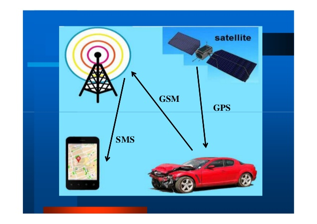

Here I need to include the Introduction
Graduating in Computer Science at the University of Cincinnati.
Exposure to Web-development in Django, Python. Graduating in Computer Science at the University of Cincinnati.
Exposure to Web-development in Django, Python. Graduating in Computer Science at the University of Cincinnati.
Exposure to Web-development in Django, Python. Graduating in Computer Science at the University of Cincinnati.
Exposure to Web-development in Django, Python.
PROJECTS

RFID Based Security System using Raspberry-Pi
The Objective of this project is to implement access control security system using RFID technology.
Programmed the tiny computer, Raspberry-Pi to integrate with RFID and door latch.
Developed programs to email user login alert to the server.

Project Information goes here :)
Here I need to include the Achievements
University Graduate Scholarship by The University of Cincinnati, 2017
Achieved Wipro Toppers Award 2015 during a 4 months training program. The training includes Datacom, TCL-TK, Unix and Networking Technologies.
The Best Outgoing Student Award, 2009